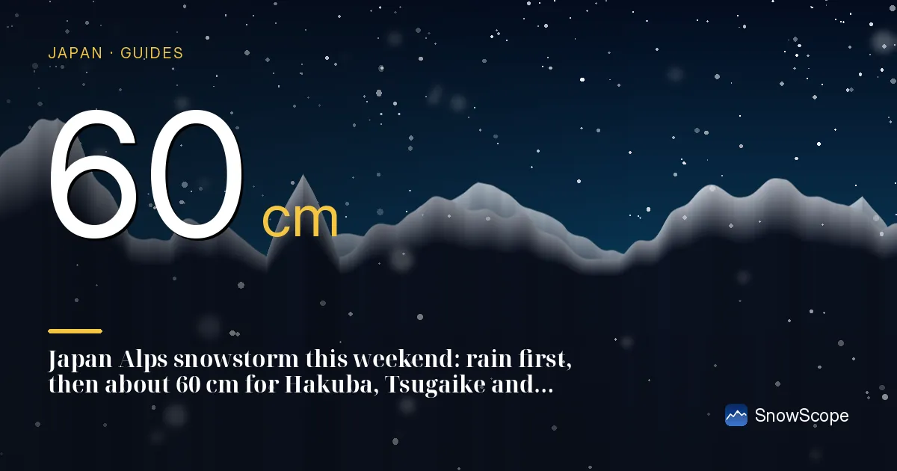

Hakuba Happo-one: snow today
Hakuba Happo-one: snow today. The second big storm of the season reaches the Northern Japanese Alps this weekend, and it comes in two very different …
Japan Alps snowstorm this weekend: rain first, then about 60 cm for Hakuba, Tsugaike and Myoko (28-30 November 2026)

The second big storm of the season reaches the Northern Japanese Alps this weekend, and it comes in two very different halves. On Saturday 28 November warm, wet air brings heavy rain to the valleys and even to the lower lifts. Then, overnight into Sunday 29 November, cold air arrives behind it and turns everything above mid-mountain to snow. On our map of 27 November, Hakuba Happo-one gets about 62 cm of new snow on its upper slopes from 28 to 30 November, Tsugaike Kogen about 61 cm and Myoko Suginohara about 57 cm. These are the three biggest totals in Japan for the weekend.
Where the snow falls
The storm is aimed at the high ground between the Hakuba valley and Myoko, on the Sea of Japan side of Nagano and Niigata. Hakuba 47 and Hakuba Goryu each get about 56 cm on the upper slopes, Muikamachi Hakkaisan in Niigata about 49 cm, Hakuba Cortina about 46 cm and Togakushi and Hakuba Iwatake about 44 cm.
Further east the totals drop. Akakura Kanko gets about 39 cm, Kagura about 38 cm, Madarao about 33 cm, Shiga Kogen at Yakebitai about 32 cm and Nozawa Onsen about 28 cm. All of Japan feels the change: on our map the number of ski areas with snow on their upper slopes goes from 315 of 523 today to 446 on Sunday, and the snow-covered area of the country doubles, from about 52,690 km² to about 105,010 km².